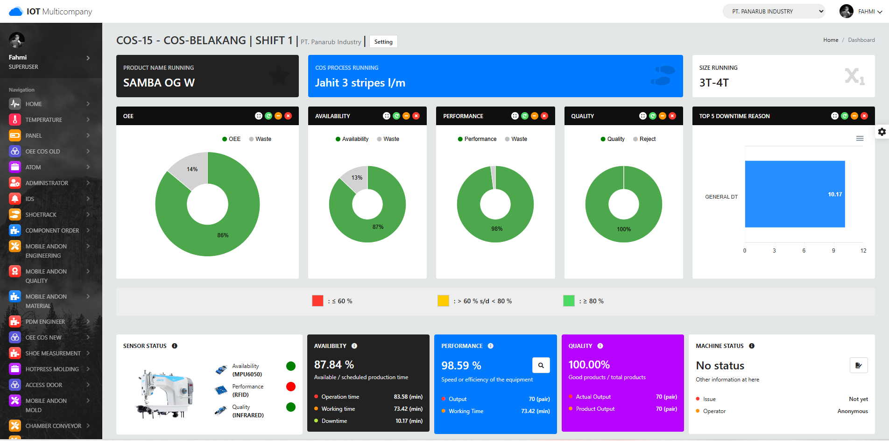
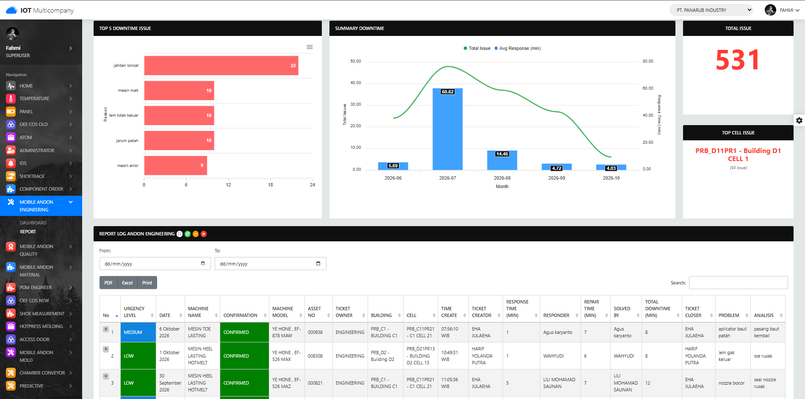
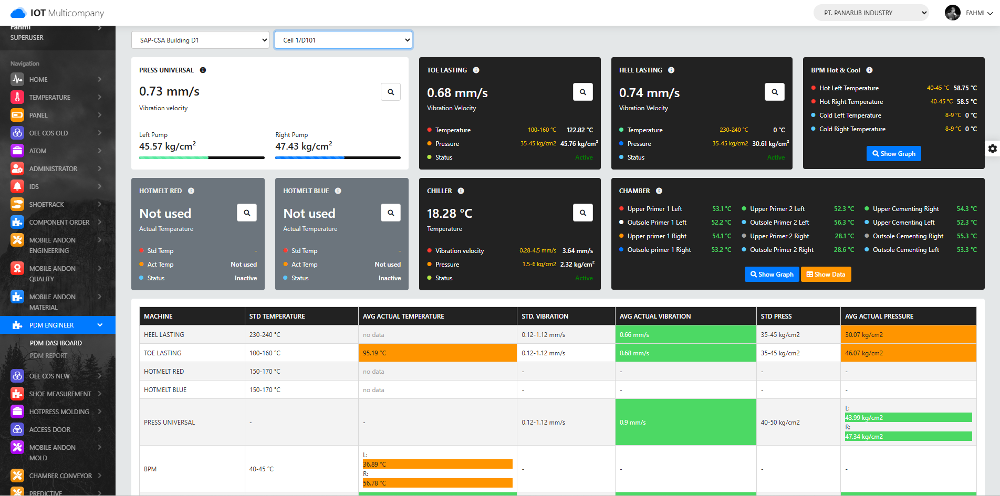
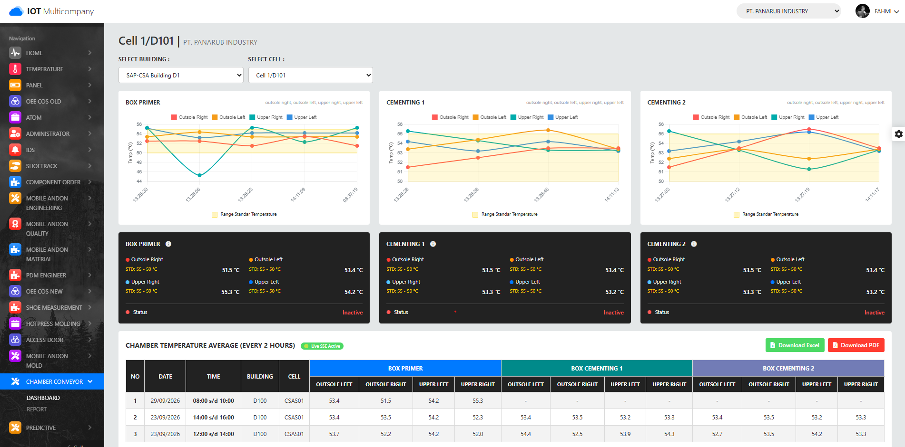
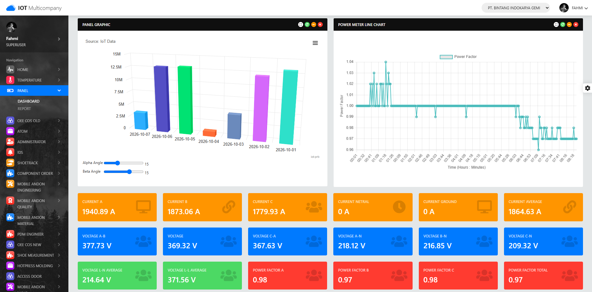
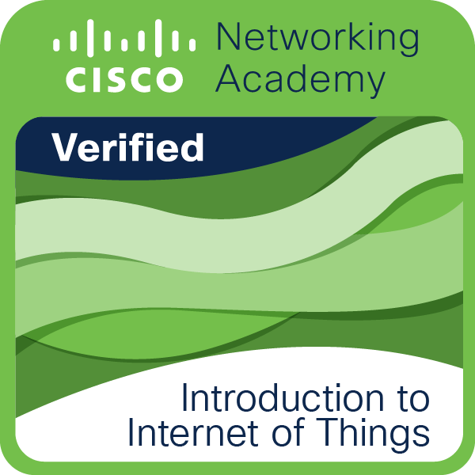

Industrial IoT
ESP32, Raspberry Pi, sensors, LoRa, Modbus RTU, edge gateways and machine data acquisition.
INDUSTRIAL IoT · OT/IT · CYBERSECURITY
Fahmi Andriansyah is an Industrial IoT and Cybersecurity professional focused on smart manufacturing, OT/IT integration, machine monitoring, predictive maintenance and secure industrial systems.
$ whoami
Fahmi Andriansyah
role : Industrial IoT & Cybersecurity
focus : Smart Manufacturing
security : OT/IT & AppSec
stack : ESP32 · LoRa · Python
Laravel · Node.js · Linux
status : BUILDING INDUSTRIAL SYSTEMSI design and develop Industrial IoT solutions across the full chain: sensors and controllers on the shop floor, wireless communication and edge gateways, APIs and databases, dashboards, monitoring and security controls.
My work combines manufacturing knowledge with IT engineering and cybersecurity, with an emphasis on systems that are measurable, maintainable and secure.
ESP32, Raspberry Pi, sensors, LoRa, Modbus RTU, edge gateways and machine data acquisition.
OEE, Digital Andon, predictive maintenance, process monitoring, asset movement and production visibility.
ISA-95, Purdue Model, network segmentation, API integration, lifecycle and governance.
IEC 62443, ISO/IEC 27001, secure APIs, vulnerability research, source-code review and security validation.
Laravel, Node.js/Express, PostgreSQL, Linux, Docker, dashboards and monitoring stacks.
Prometheus, Grafana, Telegraf, InfluxDB, Node Exporter and infrastructure observability.
Selected work across manufacturing, monitoring and digitalization.

Machine availability, production output and quality visibility.

Response time, repair time, downtime and asset tracking.

Vibration, pressure and machine-state data for anomaly detection.
Jetson Nano and image processing for tray-object detection.

Surface object temperature monitoring using LoRa.
DHT22 + ESP32 + LoRa for environmental visibility.
ISA-95 and Purdue-oriented architecture for manufacturing systems.
Security controls for devices, APIs, networks and deployment.

Wireless acquisition and dashboarding of electrical measurements.
Security work includes internal/public asset assessment, API security testing, source-code review, static analysis, vulnerability validation, Linux/server hardening and observability.


For Industrial IoT, smart manufacturing, OT/IT architecture or cybersecurity collaboration.